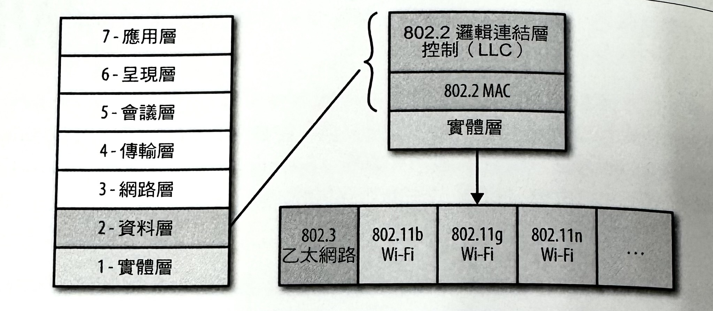
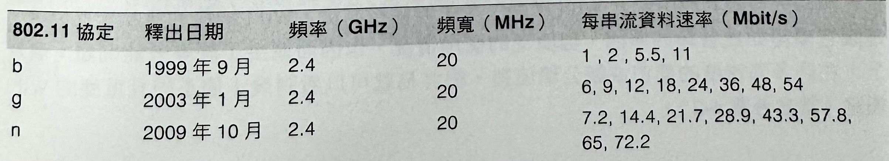
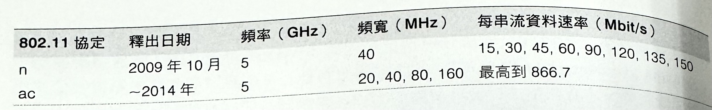
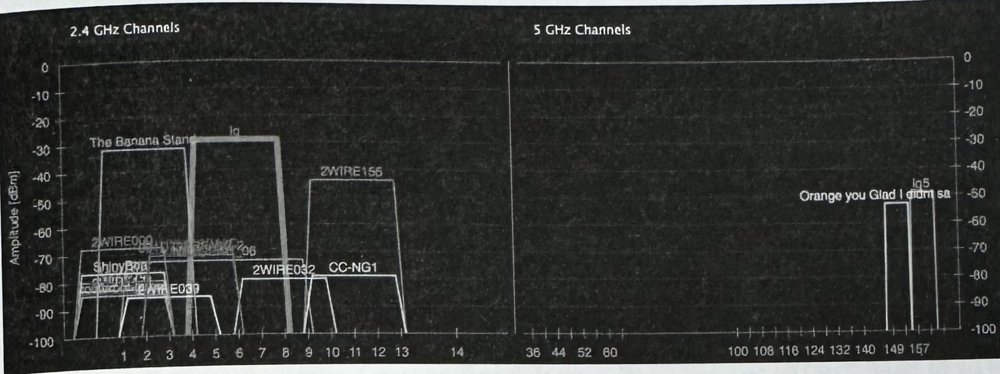
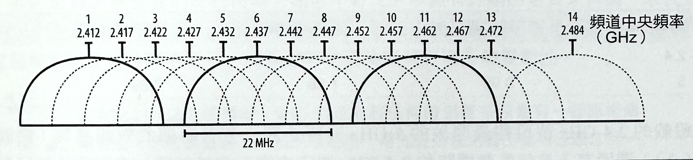
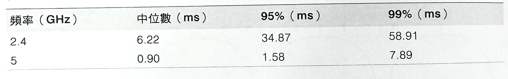
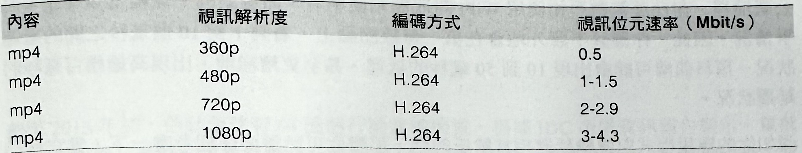

1-18-7 無線網路效能-WiFi
WiFi 是運作在無照的 ISM 頻道上。因此，任何人都可以很輕易地在任何地方進行部署，而且所需的硬體設備上也很簡單又便宜。毫無疑問地，它就變成了部署最廣，也是最受歡迎的無線標準。
這個標準的名字是屬於 WiFi 聯盟（WiFi Alliance）的一個商標，而這個聯盟是一個為了推廣無線區域網路技術，並提供互用標準和測試工作的一個商業聯盟。技術上，相關裝置必須對 WiFi 聯盟提出並通過，才能使用 WiFi 名稱和商標，但實際上，這個名稱是被用來指任何以 IEEE 802.11 標準為基礎的任何產品。
第一個 802.11 協定起草於 1997 年，而這或多或少是為了要用來當作是乙太網路 (Ethernet) 標準（IEEE 802.3），轉往無線通訊世界的一個直接改編版本。然而，直到 1999 年，當 802.11b 標準被採用時，WiFi 裝置的市場開始起飛。該技術的相對簡易性、容易部署、方便，以及是運作在無照 2.4 GHz ISM 波段的事實，而使得任何人都可以輕易地提供一套可連上他們現有內部區域網路的「無線擴充」功能。如今，幾乎每台新的桌上型電腦、筆記型電腦、平板電腦、智慧型手機，還有任何其他類似形式的裝置，都具備 WiFi 支援能力。
從乙太網路到無線區域網路
802.11 無線標準主要是用來當作現有乙太網路（802.3）標準的一個改編版本。因此，當乙太網路通常是被當做 LAN（Local Area Network，區域網路）標準來使用時，802.11 系列（如圖 6-1）則相當於無線區域網路（WLAN）。然而，對歷史有興趣的人來說，乙太網路協定在技術上，有許多部分是從 ALOHAnet 協定所得到的啟發——這個 ALOHAnet。
協定是夏威夷大學在 1971 年時，所發展出來的無線網路的第一個公開展示實例，而我們則整整繞了一大圈才又發展出一套類似的標準。
802.3（乙太網路）和 802.11（WiFi）資料與實體層
這個對比之所以重要的原因，是因為有了 ALOHAnet 對所有無線通訊進行安排的處理機制，因而有了之後的乙太網路和 WiFi 協定。換句話說，不管是有線或無線，它們全都是把共用的媒介當成是「隨機存取頻道」（random access channel）的方式來處理，而「隨機存取頻道」意味著，裡頭沒有任何可用來控制某個裝置，是否被允許隨時對任何節點去傳輸資料的中央處理程序或排程器。取而代之的情況是，每個裝置都可以自行決定，而且所有裝置都必須相互合作來確保適當的共用頻道效能。
乙太網路標準一直以來都是依賴著一種隨機的「載波偵聽多路存取」（carrier sense multiple access, CSMA）協定，而這個協定是單純的「說話前先聆聽」（listen before you speak）演算法的一個複雜名稱。簡單來說，假如你有資料要進行傳送的話：
- 檢查是否已經有人正在進行傳輸。
- 假如頻道處於忙碌狀態，就先進行偵聽，直到有空為止。
- 當頻道有空時，就立即進行資料的傳輸作業。
當然，傳播任何訊號都得花時間。因此碰撞情況可能仍然會發生。基於這個原因，Ethernet 標準也加入了「碰撞偵測機制」（collision detection）（CSMA/CD）：假如偵測到碰撞狀況的話，雙方就會立刻停止傳輸，並以一個隨機間隔時間（搭配指數備援）來進入睡眠狀態。如此一來，多個互相競爭的發送者就不會同步，就不會同時重新啟動它們的傳輸作業。
WiFi 也依循一種相當類似，卻稍微有點不同的模式：由於無線電的硬體限制關係，所以它無法在資料發送的時候，偵察碰撞情況。因此，WiFi會仰賴的是「碰撞迴避機制」（collision avoidance）（CSMA/CD），而這個機制是，每個發送者會藉由頻道被偵測出處於閒置狀態，才會開始進行資料傳輸的方式，來試圖避開碰撞情況，接著再把它本身的完整訊息框給整個發送出去。當 WiFi 訊框（frame）被發送出去後，發送者就會等候來自接收者的一個同意訊息，才會繼續處理下一個傳輸作業。
這其中還有一些細節，不過大致上就是上面那樣：這些技術的結合，就是 Ethernet 和 WiFi 都會用來對共用媒介進行存取的管理方式。在 Ethernet 的場合當中，媒介是一種實體線路，而在 WiFi 場合裡，則是那共用的無線電頻道。
在實踐過程中，隨機存取模式很適合少量地處理負載網路。事實上，我們不會在此呈現其中的數學運算，但我們可以證明，若要取得適當的頻道運用情況（最小碰撞次數），該頻道負載就必須被維持在 10% 以下。如果一直保持較低的負載情況的話，我們就能夠在不需要進行任何繁瑣的協調或排程作業的情況下，即可獲得不錯的總吞吐量。然而，要是負載增加的話，碰撞數便會迅速增高，以致於讓整個網路呈現出不穩定的效能情況。
假如你曾經去使用某個含有許多存取競爭節點的高負載 WiFi 網路的話（例如，在研討會之類的大型公開活動裡），你就應該有過使用「不穩定 WiFi 效能」的經驗了。當然，這種隨機排程方式並不是造成問題的唯一因素，但它也確實是參與其中的一份子。
WiFi標準與功能特色
802.11b 標準將 WiFi 帶進了我們日常生活當中，但就如同其他熱門的科技一樣，IEEE 802 標準委員會並沒有因此就停下腳步，而是積極持續地釋出擁有更高傳輸量的新協定（請參考表-1）、更好的調變技術、多路串流，以及更多其他的新功能特色。
表 1 ：WiFi 版本歷史與發展藍圖


現今 b 和 g 標準是最被廣泛部署和支援的。兩者都在 2-4GHz 的 ISM 波段上，並使用 20 MHz 頻寬，而且支援大多數的無線資料串流。依照你所在地區的規範，傳輸功率很可能是固定在 200 mW 的最大值以內。有些路由器（router）允許你去調整這個設定值，但很可能還是會以區域最大值來覆蓋過去。
那麼，我們要如何提升未來 WiFi 網路的效能呢？n 和即將到來的 ac 標準都是讓每個頻道的頻寬，從 20 MHz 加倍到 40 MHz，並運用高階調變方式，而且會加入多個無線電波來平行地傳輸多個資料流一也就是所謂的 MIMO（多路輸入與多路輸出）。全部組合起來，並在理想狀況下，應該就能夠透過即將來臨的 ac 無線標準，來啟動 GB 等級以上的資料傳輸總吞吐量。
WiFi 效能的測量與最佳化方式
此時，你應該有理由對「理想狀態」的說法感到懷疑。WiFi 網路的廣泛使用與普及情況，同時也在相互間（inter-cell）與內部（intra-cell），產生出本身最大的效能挑戰之一。WiFi 標準並沒有所謂的中央排程機制（central scheduler）一這也表示，它並不對任何客戶端做傳輸量或延遲上的保證。
新的 WiFi 多媒體（WiFi Multimedia, WMM）擴充功能會針對具有延遲敏感性的應用（像是影音串流應用），來啟動無線電介面裡的基本「服務品管機制」（Quality of Service, QoS），但是只有少數路由器，甚至更少的客戶端，會察覺到它的存在。在此期間，你擁有的網路和附近 WiFi 網路裡頭的所有流量，都必須爭相地去對相同的共用無線電資源進行存取。
你的路由器可能允許你在自己的專屬網路裡，對客戶端設定一些服務品管（Quality Of Service, QoS）規則（例如，每個客戶端的最大資料速率，或使用的流量類型），但是你仍然無法去控制其他由附近 WiFi 網路所產生的傳輸流量。WiFi 網路的容易配置情況，是讓它變得如此普級的原因，但廣泛的使用情况，也因而產生了許多效能問題：事質上，在許多高密度的都市或辦公環境裡，很容易就可以看到幾十個不同且重疊的 WiFi 網路（請參考圖-2）。
圖-2： inSSIDer 軟體：以視覺圖像的方式，來呈現 WiFi網路的重疊情況（2.4 和 5GHz波段）

最廣泛使用的 2.4GHz 波段，提供了1、6 和 11 這個三個不重疊的 20MHz 無線電頻道（如圖-3）。這樣的指定方式在各國之間並不完全相同。在某些國家，你可能可以去使用更高的頻道（13、14），而在其他國家，則可能會被限定只能使用更少的幾個頻道。 然而，無論各地的規範如何，這表示當你的附近同時有兩個或三個以上的 WiFi 網路時，你必須把某些給覆蓋過去，以便在同樣的頻率範圍裡，去爭相地使用相同的共用頻寬。

你的 802.11g 客戶端和路由器或許能夠到達 54 Mbp 的傳輸量，但是，當你的鄰居正在佔用相同的 WiFi 頻道，並透過 WiFi 來傳輸 HD 視訊影片時，你的頻寬就會被截半，甚至更低。你的存取點無法知道這樣的安排情況，而且那還是項功能特色，而不是錯誤狀況喔！
遭憾的是，傳輸效能卻沒有因為這項功能特色而變得更好。在你的客戶端和 WiFi 存取點之間的第一節點（first-hop）的延遲情況，並沒有得到任何的保證。在有著許多重疊網路的環境裡頭，對於在第一個無線節點，就出現數十到數百毫秒的高變化情況，你應該不會感到意外才是。因為你正與每個其他無線節點間，爭相地在存取那共用的頻寬。
所幸，假如你是屬於早期使用者的話，就有機會可以大幅提高你自己的 WiFi 網路傳輸效能。新的 802.11n 和 802.11ac 標準所使用的 5GHz 波段，都有提供更寬的頻率範圍，而且在大多數環境裡頭，仍然還沒有什麼大的干擾情況。至少，目前這個時候，或者你身邊沒什麼像你這樣的技術狂熱者的話，你就可以享受這樣的待遇。具有 2.4GHz 和 5GHz 波段傳輸能力的雙波段路由器 （dual-band router），將能夠同時為受限於 2.4GHz 的舊版客戶端提供所需要的相容性，並且為 5 GHz 波段上的任何使用者，提供更好的效能。
測量你的 WiFi 第一節點延遲
對你的無線閘道（gateway）執行 ping 指令，是用來估計你的第一無線節點的傳輸延遲時間的一種簡單方式。你的測試結果應該會有所差異，不過我們還是先來參考一個實際案例：以下是筆者在自己家中環境，針對一台雙波段 802.11n 路由器所進行的測試情況。
表 2 : 在 2.4GHz 和 5GHz 的 WiFi 波段之間的延遲差異
超載的 2.4 GHz 波段和最開放的 5GHz 波段之間，有著明顯的效能差異（如圖 6-2）：透過有十幾個重疊網路的 2.4 GHz 波段來進行傳輸的話，會對我的筆記型電腦到我的無線路由器之間的第一節點，造成 35 毫秒的延遲（95%），而那兩個裝置相距根本不到 6 公尺遠！
總體來看，我們可以從中得知哪些有關 WiFi 效能的資訊呢？
- WiFi 不會對使用者做任何有關頻寬或延遲時間方面的保證。
- WiFi 會根據所在環境的訊號與噪音狀況，來提供不固定的傳輸頻寬。
- WiFi 傳輸功率被限定最高為 200 mW，而在你自己的環境裡頭，這個限制很可能還要更低。
WiFi 在 2.4GHz 和較新的 5GHz 波段裡，擁有一個頻道的制頻數。
WiFi 存取點（access point，無線基地台）會在安排好的指定頻道內，出現相互重疊的情況。
WiFi 存取點和節點，會爭相地存取相同的無線電頻道。
WiFi 沒有所謂「典型的」傳輸效能。傳輸效能的可能範圍，將會根據使用的標準、使用者的位置、使用的配備，以及區域無線電傳輸環境而有所不同。假如你夠幸運，而只有你是唯一的 WiFi 使用者的話，你就可以預期有高吞吐量、低傳輸延遲，以及低的效能變化。不過，一旦有其他人，或是附近的 WiFi 網路的話，你就得和它們在存取上進行競爭，而使得所有的好處就全都沒了一最後落得延遲和頻寬都出現不穩定的高變化情況。
WiFi 網路的封包遺失情況
WiFi 傳輸的隨機排程機制，可能會讓區域裡頭的多個無線節點之間，造成大量的碰撞情況。然而，即使發生這樣狀況，也沒有必要解讀成是受監控 TCP封包的大量遺失狀況。所有 WiFi 協定的資料和實體層實作方式，都擁有它們自己的重新傳送與錯誤修正機制，而使得網路堆疊的較高層級並不會看到這些無線碰撞情況。
換句話說，雖然 TCP 封包遺失狀況是透過 WiFi 網路來傳輸資料時，確實會發生的問題，但是受 TCP 所監督的絕對速率，通常不會比大多數有線網路還要來得高。取代直接的 TCP 封包遺失的情況是，你很可能會看到，因為由較低的連結層和實體層所進行的底層碰撞和重新發送處理的關係，而導封包到達時間有更高的變動性。
在 802.11n 之前的標準，WiFi 協定允許任何時刻最多只會有一個訊框傳輸封包，而在要發送下一個訊框之前，得先受到連結層的認可回應才行。在有了 802.11n 之後，則引入了新的「訊框聚合」（frame aggregation）功能，以便允許多個 WiFi 訊框可被同時進行發送和認可。
WiFi 網路的最佳化處理
先前的 WiFi 效能特性可能描述得有點誇張了些。實際上，在大多數情況下，它似乎都運作得還不錯，而且WiFi 所帶來的便利性確實也無可挑剔。事實上，現在若想找台需要有個額外周邊，來取得一個乙太網路插座去進行有線連接的裝置的話，很可能會比你去找台沒有支援 WiFi 功能的電腦、智慧型手機，或平板還要困難許多。
有了這樣的想法之後，就值得去思考能讓你的應用程式善用無線網路帶來的好處，以及可對它進行最佳化的處理方式。
啟用不限流量頻寬（Unmetered Bandwidth）
實際上，WiFi 網路通常是以透過 DSL、纜線，或光纖連上廣域網路的有線區域網路的一種延伸。對於美國的一般使用者來說，這是指它本身國內有 8.6 Mbps 的邊際頻寬，以及全球所擁有的 3.1 Mbps 的平均值。換句話說，大部份的 WiFi 客戶端很可能還是會受限於可用 WAN（廣域網路）的頻寬，而不是 WiFi 本身的限制。那就是為何會說，目前的無線電網路環境還不錯的原因。
然而，除了頻寬瓶頸以外，這也經常代表著，一個典型的 WiFi 部署情況，是由一個不限流量的 WAN 連線 — 或者說，至少是個擁有較高資料容量與最大吞吐量的某個連線，所支撐著。許多使用者在透過 3G 或 4G 連線進行大型下載作業時，很可能會對相關成本和頻寬容量特別敏感，不過這在 WiFi 上通常都不成問題。
當然，不限流量的假設情況並非適用所有的案例（例如，以 3G 或 4G 連線為基礎的 WiFi 連線裝置），但實際上，在絕大多數的場合底下多半適用。因此，龐大下載、更新，以及串流使用場合，都盡可能透過 WiFi 來進行。千萬不要害怕去鼓勵使用者，在這類場合上切換到 WiFi！
許多行動電話業者建議針對資料密集的應用程式，採取「WiFi 轉嫁」（WiFi offloading）策略 — 也就是提醒使用者切換到 WiFi，或者盡可能啟動 WiFi 連線來執行你的背景同步或大型資料傳輸作業。
調整可變頻寬
就如同我們看過的那樣，WiFi 無法對頻寬和傳輸延遲提供任何保證。使用者的路由器可能具有某些應用層級（application-level）的 QoS 策略（policies），以便對同一無線網路上的多個節點提供一定程度的公平性。然而，WiFi 無線電介面本身針對 QoS 的支援相當有限。更糟糕的是，在多個且重疊的 WiFi 網路之間，並沒有任何的 QoS 策略。
如此一來，可用頻寬的配置方式很可能就會隨時，根據所在位置、附近無線節點的活躍狀況，和一般無線電環境的微小變化，而有巨大的差異。
舉例來說，一個高畫質視訊串流（HD video stream）可能需要每秒好幾個 MB 的頻寬（請參考表-3），而雖然大多數 WiFi 標準在理想條件下都能滿足這樣的需求，但實際上，你應該不意外地會看到，也應該會預料到，在傳輸吞吐量當中的間歇性資料遭遺失狀況。事實上，基於可用頻寬的動態特性，你無法也不應該依據過去的下載位元速率，來推斷未來長遠的傳輸情況。視訊開頭的頻寬速率測試作業很可能會因為無線電條件在播放期間發生改變的關係，而造成間歇性的緩衝暫停狀況。
表3 ： 針對 H.264 視訊編碼格式的 YouTube 影片位元速率範例
然而，雖然我們無法預測可用頻寬大小，但是我們可以，也應該根據以「自適性串流」（adaptive bitrate streaming）之類的技術，來持續量測結果，來進行調整。
自適性串流機制（adaptive bitrate streaming）
雖然自適性串流機制並不適用於所有的資源類型，不過對於在視訊和音訊內容之類的長期連線串流上，卻相當契合。
在視訊應用當中，資源可能會多種位元速率來進行編碼處理並保存，然後再被分割成許多部分（例如，YouTube 視訊就會被分成 5 到 10 秒的資料塊）。接著，當客戶端對資料進行串流處理時，不管是客戶端或伺服器都可以監控到每個區段的下載速度，並切換下一區段的位元速率，來對變化中的頻寬進行調鏊。事實上，許多視訊串流服務都會先從低位元速率區段的串流開始處理，以便展開快速播放作業，接著則根據可用頻寬，來持續調整後續區段的位元速率。
你需要用到多少種不同的位元速率呢？這答案得取決於您的應用！不過以實例來看，美國串流媒體業者 Netflix，為了應付各種螢幕尺寸和可用頻寬速率，進行了 120 種不同版本的編碼和串流處理。可見，要提供一個流暢的隨選視訊體驗，可不是件簡單的工作。
調𤨣可變延遲
WiFi 除了沒有頻寬保證之外，同樣地也沒有第一無線節點的延遲時間保證。更進一步地，假如有使用到無線橋接（轉播）存取點而需要用到多個無線節點的話，整個情況就更是無法預料了。
在理想狀況下，當存在著最小干擾而沒有載入任何網路的情況時，無線節點可能因為具備極低的變化性，而只需要花費一毫秒以下的時間。然而，實際上，在高密度市區和辦公環境裡，存在著無數爭相使用 WiFi 存取點和使用者，而會對同一無線電頻率產生競爭情況。因此，你應該不意外地會在第一無線節點上，看到 1到10
個毫秒 之間的延遲狀況一預料偶爾可能會出現 10到50毫秒 的延遲，甚至更糟糕地，出現高達幾百毫秒的延狀況。
假如你的應用程式對傳輸延遲相當敏感的話，那麼你可能需要仔細考慮一下，當它執行在 WiFi 網路上時，讓它去根據狀況進行行為反應的調整處理。事實上，這可能是一個考慮採用 WebRTC 的好理由，因為它能提供不穩定 UDP 傳輸的選擇方案。當然，切換傳輸方式無法解決無線網絡問題，但可以協助降低協定和應用程式所引起的延遲成本。